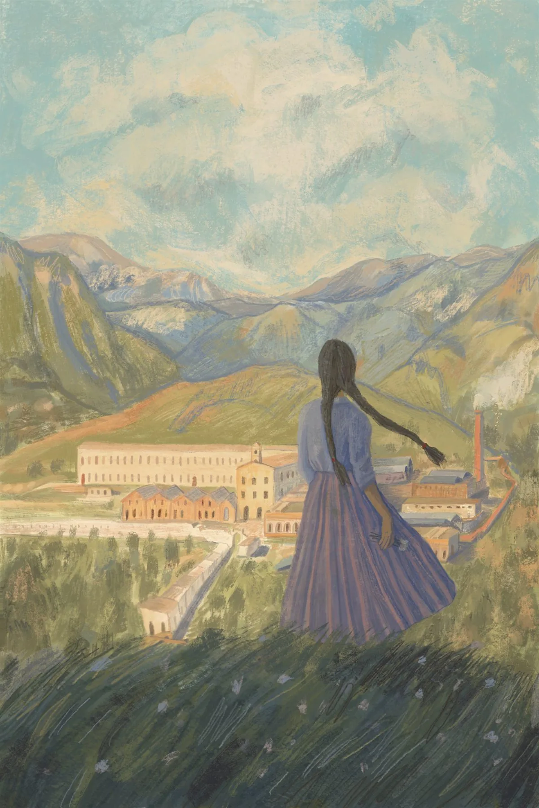

Fábrica el porvenir
An editorial book cover designed to document the history and labor of women during the early industrialization of Northern Mexico. The composition reflects the weight of manual work, the transition into industrial spaces, and feminine endurance.
Project Type
Editorial Book Cover
Year
2026
Medium
Digital Illustration
Category
History / Editorial

Previous Project
HOME
Next Project
Saltillo 447